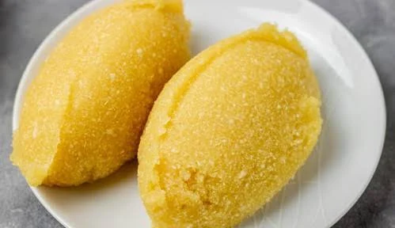

Ẹ̀bà is a staple Nigerian "swallow" food made from dried, grated cassava flour known as garri.
Originating from the Yoruba language, it is prepared by mixing garri into boiling water and working it with a wooden spatula until it forms a smooth, firm, and pliable dough.
It has a characteristically mild, slightly sour tang and is traditionally molded into balls to be eaten with the fingers alongside rich West African soups and stews.